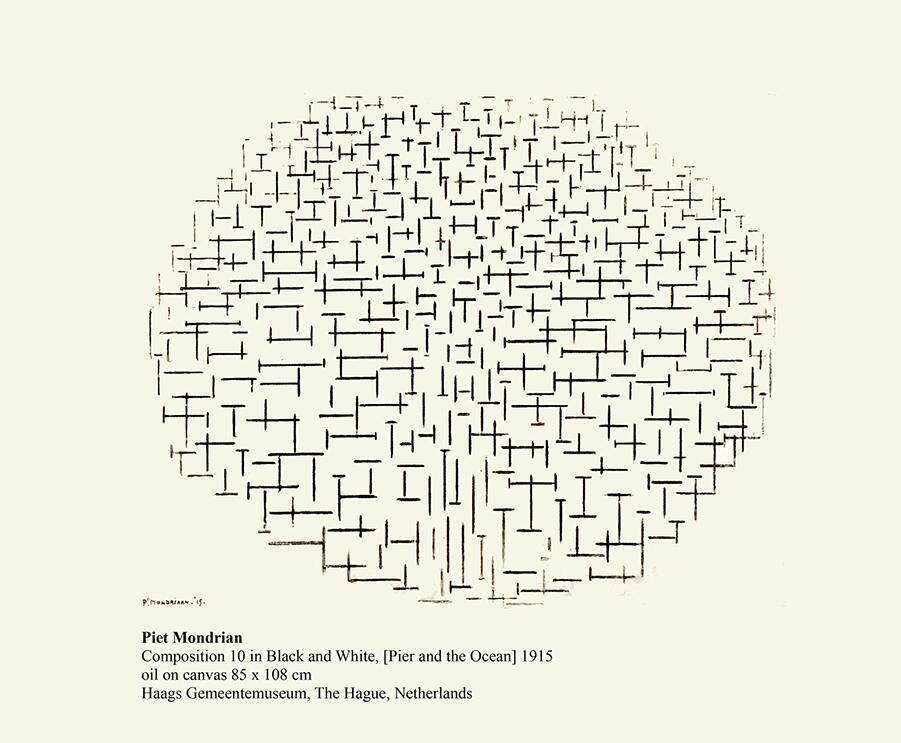
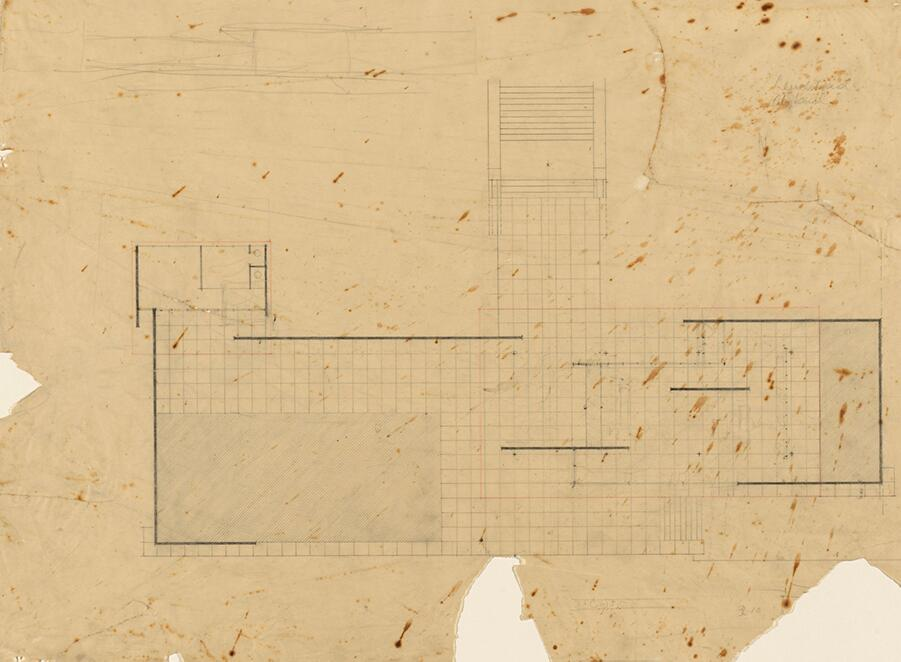
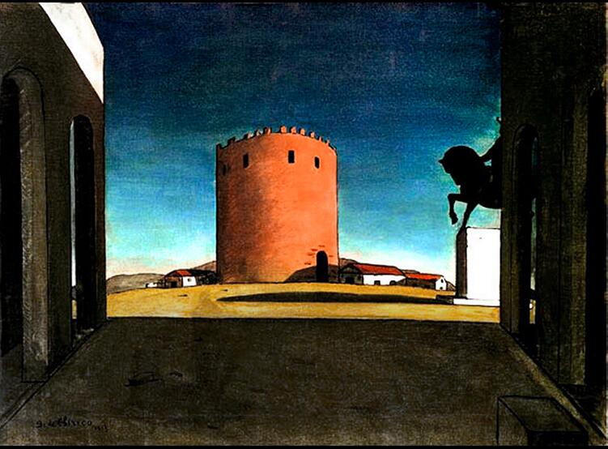

L’identità personale e il gesto originario dell’architetto
Ogni architetto inizia dal proprio sguardo sul mondo: l’osservazione, il disegno e il gesto sono forme originarie di comprensione spaziale, prima ancora dell’apprendimento tecnico. Le immagini proposte mostrano come, nei taccuini e nelle abitudini di lavoro, si manifesti una vocazione progettuale: un modo personale di organizzare la realtà, selezionare ciò che conta, trattenere relazioni.

L’interesse di Le Corbusier per la Casa di Sallustio a Pompei è documentato nel suo diario di viaggio, il Carnet IV del suo Viaggio in Oriente, realizzato nel 1911. L’osservazione di questa dimora romana ha alimentato la sua riflessione sull’architettura, in particolare sulla composizione spaziale, il rapporto tra interno ed esterno e i tracciati regolatori.
La Casa di Sallustio e il Viaggio in Oriente
- Viaggio di studio: Nel 1911, Le Corbusier (allora Charles-Édouard Jeanneret) visita Pompei durante il suo Viaggio in Oriente. Questo viaggio, iniziato nel 1910, è una ricerca di ispirazione presso le fonti dell’arte classica, come quelle della Grecia e dell’Italia.
- Osservazioni sulla domus: Nel suo Carnet IV, realizza alcuni schizzi della Casa di Sallustio, risalente al II secolo a.C. Questi disegni non si limitano a una riproduzione fedele, ma sono un’esplorazione della struttura e dello spazio. Studia le relazioni tra i diversi elementi architettonici, in particolare l’atrio, le stanze interne e il giardino.
- Ricerca della geometria: A Pompei, Le Corbusier cerca le logiche nascoste della composizione che danno senso alla disposizione degli oggetti architettonici. Si interessa alle linee invisibili che ordinano lo spazio, piuttosto che alle decorazioni superflue.
Influenza sull’opera di Le Corbusier
- Rapporto interno-esterno: L’apertura delle case pompeiane, tra cui la Casa di Sallustio, verso l’esterno e il modo in cui le rovine creano aperture e “diaframmi” spaziali, hanno segnato Le Corbusier. Questo rapporto dialettico tra spazio chiuso e spazio aperto si ritrova nel suo concetto di “passeggiata architettonica” e nell’uso di terrazze e giardini pensili.
- Incompletezza e struttura: Lo stato di rovina delle dimore di Pompei, dove le pareti e i tetti mancanti rivelano la struttura e la sezione degli edifici, ha affascinato Le Corbusier. Questa esposizione della struttura stessa dell’architettura è un concetto che ha ripreso, in particolare con l’uso del cemento grezzo e l’evidenziazione dei pilastri.
- Eredità nella sua opera: L’influenza dell’architettura antica, e più specificamente delle sue osservazioni a Pompei, è percepibile durante tutta la sua carriera. La ritroviamo nelle sue costruzioni emblematiche come la Villa Savoye o l’Unité d’Habitation di Marsiglia, dove le forme antiche sono reinterpretate e astratte in un linguaggio architettonico moderno.

Lo schizzo tratto dal Caderno 32 dell’architetto Álvaro Siza è un disegno di un “grattacielo immaginario” realizzato nel 1979. Lo schizzo originale fa parte della collezione Drawing Matter, mentre la collezione più ampia degli sketchbook di Siza è conservata presso il Canadian Centre for Architecture (CCA).
Dettagli dello schizzo- Oggetto: un grattacielo immaginario, un argomento discusso da Siza in relazione al progetto “Mile-High Illinois” di Frank Lloyd Wright.
- Tecnica: penna a sfera su carta.
- Dimensioni: 297 mm × 210 mm (formato A4).
- Ubicazione dell’originale: collezione Drawing Matter (DMC 2529.38).
- Contesto: lo schizzo riflette l’interesse di Siza per il potenziale del design verticale e la sua continua esplorazione di idee architettoniche attraverso il disegno.
Gli sketchbook sono stati il mezzo principale utilizzato da Siza per esplorare idee architettoniche, prendere appunti e documentare conversazioni con persone e progetti.

Il lavoro dell’architetto come processo,
non come gesto estetico
Il lavoro dell’architetto non si esaurisce nell’estetica della forma, ma è un processo complesso di analisi, selezione, confronto e costruzione. Attraverso immagini di lavoro in studio e schizzi progettuali, viene restituita la dimensione artigianale e riflessiva del mestiere: un’attività che si fonda sulla pazienza, sulla revisione continua, sulla capacità di modellare relazioni più che oggetti.


Gli schizzi di Lina Bo Bardi per il complesso SESC Pompeia erano parte integrante del suo processo di progettazione e riflettevano l'attenzione rivolta all'attività umana, all'interazione sociale e al riutilizzo dello spazio industriale esistente. I disegni sono noti per la loro estetica essenziale, “povera” e spoglia, che cattura l'energia e il flusso delle persone all'interno dello spazio piuttosto che concentrarsi esclusivamente sui dettagli tecnici.
Caratteristiche degli schizzi- Attenzione all'umanità: i suoi schizzi includevano spesso figure e forme, catturando la “realtà dell'ambiente umano brasiliano” e la vita spontanea della comunità locale che aveva già iniziato a utilizzare lo spazio della fabbrica abbandonata.
- Estetica essenziale e grezza: i disegni utilizzano spesso linee semplici e materiali grezzi, mostrando una propensione per un aspetto incompiuto che si traduceva nell'uso di cemento a vista e di elementi originali della fabbrica nel progetto.
- Riflessione concettuale e sociale: per Bo Bardi il disegno era una “riflessione sociale ed esistenziale” e un mezzo di “ricerca antropologica”, non solo una fase tecnica della progettazione.
- Movimento e flusso: gli schizzi illustrano un “senso caotico ma vivace di flusso permanente” in tutto il progetto, un concetto chiaramente evidente nella disposizione finale dell'edificio, comprese le passerelle aeree che collegano le torri sportive.
- Elementi dettagliati: Esistono schizzi specifici per vari elementi, come il design dello sgabello SESC (che mostra variazioni nella costruzione) e l'interno del teatro (con dettagli sulle tribune in cemento e sulle piastre acustiche in ferro).

Esistono fotografie del tavolo da disegno e dell’atelier di Le Corbusier al 35 di rue de Sèvres a Parigi risalenti agli anni '30 circa, che offrono una visione del suo ambiente di lavoro. Queste immagini ritraggono spesso il suo tavolo da disegno e talvolta mostrano i suoi assistenti, come Charlotte Perriand e Pierre Jeanneret, al lavoro nello studio.
Descrizione delle fotografie dell’atelier- Ambiente: le fotografie ritraggono generalmente uno spazio di lavoro funzionale, non un ambiente immacolato e allestito ad hoc. Possono includere materiali da costruzione, strumenti da disegno e modelli architettonici.
- Il tavolo da disegno: il tavolo stesso è un modello specifico di tavolo da architetto, una versione identica di quello utilizzato oggi nell'appartamento-studio ristrutturato in cui Le Corbusier visse dal 1934 al 1965.
- Atmosfera: Queste immagini catturano la dimensione umana dell'architettura moderna e la comunità internazionale collaborativa di persone che hanno lavorato con Le Corbusier.
- Stile fotografico: Le Corbusier era attivamente coinvolto nella fotografia e utilizzava ampiamente le immagini per la documentazione e la propaganda nelle sue pubblicazioni.
La percezione prima della tecnica
La tecnica viene dopo. Il primo strumento dell’architetto è lo sguardo. Questa scheda invita a considerare lo spazio come fenomeno percettivo: fatto di assi, profondità, soglie, proporzioni. Le immagini selezionate non mostrano “oggetti”, ma modalità di vedere: come l’architetto seleziona e organizza la realtà, già prima di tracciarne una linea.

- asse prospettico chiarissimo
- relazione tra pieni e vuoti
- profondità determinata dalla luce
- ritmo scandito dalle persone
- spazio come evento, non come sfondo
Henri Cartier-Bresson si recò a L’Aquila, in Abruzzo, Italia, nel 1951 e realizzò una serie di fotografie significative che documentavano la vita e le tradizioni locali. Il suo lavoro in questa regione è noto per aver catturato l'essenza di un'Italia del dopoguerra in transizione, prima del picco dell'influenza industriale.
Durante il suo viaggio in Italia nel 1951, Cartier-Bresson fu incaricato di documentare varie regioni, con particolare attenzione al Sud e alla vita rurale. In Abruzzo visitò sia la città di L'Aquila che il vicino villaggio di Scanno, realizzando alcune delle sue immagini più famose e iconiche.
Gli aspetti chiave del suo lavoro in questa regione includono:
- Il momento decisivo: le sue fotografie dell'Abruzzo sono eccellenti esempi del suo concetto di “momento decisivo”, in cui ha catturato scene nell'istante esatto in cui tutti gli elementi si sono allineati armoniosamente per raccontare una storia.
- Foto iconica di Scanno: una delle sue immagini più celebri, spesso citata come “Scanno, Abruzzi, Italia”, raffigura una donna che cammina per strada, con altre figure sullo sfondo. Questa foto è stata scattata da un punto di vista specifico, ora noto come “scala dei fotografi”.
- Intimità documentaria: le immagini mettono in mostra la sua capacità di catturare immagini spontanee e intime in bianco e nero che evidenziano l'identità locale unica della regione e il contrasto tra tradizione e modernità emergente.
- Magnum Photos:queste fotografie sono state realizzate nell'ambito del suo lavoro come membro fondatore di Magnum Photos, la prestigiosa agenzia cooperativa che ha fondato nel 1947 con Robert Capa, George Rodger e David Seymour.

- cornici entro cornici
- piani sovrapposti
- relazione tra oggetti e vuoto
- spazio quotidiano come territorio mentale
Le fotografie di Luigi Ghirri intitolata "Modena, 1973" fanno parte della celebre serie e del libro fotografico Kodachrome. L'opera è conservata presso l'Archivio Luigi Ghirri. Il libro raccoglie 92 fotografie a colori scattate tra il 1970 e il 1978. Ghirri utilizzò il suo archivio come un "serbatoio di immagini", creando una sequenza che, pur apparendo disgiunta, costituisce una riflessione profonda sull'atto di guardare e sulla rappresentazione della realtà. La foto, come gran parte del lavoro di Ghirri, si concentra sul paesaggio e sulla percezione del quotidiano, trasformando scene ordinarie, a volte banali, in poesia visiva.
Kodachrome è considerata un'opera fondamentale nella storia della fotografia italiana, segnando l'abbandono delle pose documentaristiche tradizionali in favore di un approccio più concettuale e poetico.

- rapporti
- masse
- linee di forza
- intensità luminose
I taccuini di schizzi del “Viaggio in Oriente” di Le Corbusier, compresi i suoi disegni dell'Eretteo e di altri edifici dell'Acropoli, sono conservati dalla Fondazione Le Corbusier a Parigi.
La percezione prima della tecnica
La tecnica viene dopo. Il primo strumento dell’architetto è lo sguardo. Questa scheda invita a considerare lo spazio come fenomeno percettivo: fatto di assi, profondità, soglie, proporzioni. Le immagini selezionate non mostrano “oggetti”, ma modalità di vedere: come l’architetto seleziona e organizza la realtà, già prima di tracciarne una linea.

Tilted Arc (1981) di Richard Serra era una grande e controversa scultura pubblica situata nella Federal Plaza, a Manhattan, New York City. Le fotografie della scultura mostrano tipicamente l'imponente parete curva in acciaio Cor-Ten che divide in due la piazza aperta tra gli edifici governativi.
Descrizione dell'opera- Materiali e dimensioni: La scultura era una solida lastra grezza di acciaio Cor-Ten ricoperta di ruggine, alta 3,6 metri e lunga 36 metri.
- Design: Come suggerisce il nome, la scultura aveva una leggera curvatura e era leggermente inclinata. Attraversava lo spazio aperto della piazza.
- Intenzione dell’artista: Serra intendeva che l'opera alterasse l’esperienza dello spazio da parte dei pedoni, costringendoli a camminare lungo la sua lunghezza e a diventare più consapevoli fisicamente dei loro movimenti e dell'ambiente circostante. La considerava un'opera “site-specific”, ovvero progettata per quel particolare luogo e che non doveva essere spostata.
La scultura fu commissionata dalla General Services Administration (GSA) degli Stati Uniti nell'ambito del suo programma Art-in-Architecture e installata nel 1981. Tuttavia, divenne immediatamente molto controversa:
- Reazione del pubblico: molti dei 10.000 dipendenti federali che utilizzavano la piazza la consideravano una barriera brutta e imponente che disturbava il loro tragitto quotidiano e attirava graffiti.
- Audizione pubblica e causa legale: a seguito delle petizioni per la sua rimozione, nel 1985 si tenne un'audizione pubblica. In un successivo procedimento giudiziario, la GSA decise di rimuovere la scultura.
- Smantellamento: nel 1989, la scultura fu tagliata in tre pezzi e rimossa durante la notte, nonostante le forti obiezioni dell'artista, secondo cui la rimozione avrebbe distrutto il significato dell'opera. Da allora è rimasta in deposito e non è mai stata esposta al pubblico.
- Eredità: nL’intensa battaglia legale e pubblica che ha circondato Tilted Arc ha portato all'approvazione del Visual Artists Rights Act del 1990, che garantisce agli artisti determinati “diritti morali” sull'integrità delle loro opere, anche dopo la loro vendita.

L'installazione di Dan Graham del 1974 Present Continuous Past(s) è un'opera fondamentale dell’arte concettuale e video che esplora la percezione del tempo e la consapevolezza di sé dello spettatore attraverso un sofisticato sistema di feedback con ritardo temporale che utilizza uno specchio bidirezionale, una videocamera e un monitor.
Dettagli dell'installazione ed esperienzaL'installazione è tipicamente una stanza o uno spazio che contiene i seguenti componenti:
- Una parete a specchio bidirezionale: serve a riflettere l'immagine attuale della stanza e dello spettatore.
- Una videocamera: posizionata in modo da registrare la scena, compresi i riflessi nello specchio.
- Un monitor video: le immagini riprese dalla videocamera vengono riprodotte sul monitor dopo un ritardo di otto secondi.

Uno dei celebri Skyspaces dell'artista James Turrell, Meeting è un'installazione site-specific che invita gli spettatori a guardare verso l'alto per ammirare una vista senza ostacoli del cielo. Rappresentante chiave del movimento “Light and Space” incentrato a Los Angeles negli anni '60, James Turrell crea opere d'arte che consistono principalmente di luce, esplorando questioni fondamentali sulla natura della percezione umana rendendo tangibile l'atto della visione.
Meeting è stato il secondo Skyspace realizzato da Turrell e il primo negli Stati Uniti, diventando un prototipo per le numerose opere successive che avrebbe realizzato nei decenni seguenti. Commissionata originariamente nel 1976 dalla fondatrice del P.S.1 Alanna Heiss per la mostra inaugurale del museo, l'opera non fu realizzata fino al 1980 e Turrell continuò ad apportare modifiche fino alla sua apertura al pubblico nel 1986. Nel 2016 Meeting è entrato a far parte della collezione del Museum of Modern Art.
L'installazione presenta un programma di illuminazione multicolore sincronizzato con l'alba e il tramonto che cambia sottilmente colore al variare delle tonalità del cielo.
Lo spazio come costruzione mentale
Lo spazio non è un contenitore oggettivo, ma una costruzione della mente. Questa scheda esplora l’idea che la realtà venga sempre selezionata, interpretata e organizzata secondo strutture visive e culturali. Le immagini proposte – tra astrazione pittorica, progetto architettonico e immaginario simbolico – invitano a vedere nello spazio una struttura, non solo un’estensione.

- assi,
- ritmo,
- relazioni,
- griglia percettiva.
Nel 1914 Piet Mondriaan visse per qualche tempo nelle località balneari di Domburg e Scheveningen. Lì realizzò una serie di disegni ispirati al mare e ai frangiflutti. Sulla base di questi disegni, nel 1915 creò Composizione 10 in bianco e nero, talvolta chiamata Molo e oceano. Il dipinto è il primo in cui Mondriaan utilizza esclusivamente il bianco e il nero.
Composizione 10 in bianco e nero è una composizione astratta ed ellittica di brevi linee nere orizzontali e verticali. Le onde che si infrangono sono rappresentate dalle lunghe linee orizzontali al centro del dipinto, mentre l'astrazione di un frangiflutti è riconoscibile nelle linee verticali nella parte inferiore del dipinto.
Sebbene il punto di partenza del dipinto sia ancora la realtà visibile, è chiaro che Mondriaan non è più interessato alla rappresentazione riconoscibile della natura. Si occupa principalmente di riunire gli opposti, l'orizzontale e il verticale, per esprimere così un'idea generale di armonia e ritmo.

- scorrimento dei piani,
- vuoti e pieni,
- assi invisibili,
- sequenza mentale prima che costruttiva.
La pianta del Padiglione di Barcellona non rappresenta stanze o funzioni; rappresenta un campo mentale di relazioni:
- scorrimento dei piani,
- vuoti e pieni,
- assi invisibili,
- sequenza mentale prima che costruttiva. È una delle piante più pedagogiche della storia dell’architettura.
- Struttura a griglia: l'intero padiglione è costruito su un modulo a griglia quadrato di 1,09 metri.
- Podio in travertino: la struttura è rialzata di 1,3 metri rispetto al livello della strada su un podio in travertino romano, che crea un'ampia terrazza sopraelevata.
- Tetto fluttuante: il tetto sottile e piatto è sostenuto da otto colonne in acciaio cromato a forma di croce, disposte a intervalli regolari. Queste colonne sono indipendenti dalle pareti divisorie interne, dando l'illusione che il tetto fluttui sopra lo spazio.
- Spazio fluido e aperto: le pareti divisorie interne sono realizzate in onice, marmo e vetro e sono disposte in modo da consentire agli spazi di fluire l'uno nell'altro. Le pareti non si incontrano agli angoli, creando un percorso continuo e circolare per i visitatori.
- Elementi acquatici: nel complesso sono state progettate due piscine.
- Una piscina più grande vicino all'ingresso principale del padiglione riflette l'edificio e ne sottolinea la leggerezza.
- Una piscina più piccola e più riservata si trova vicino all'estremità orientale, insieme alla scultura La ballerina di Georg Kolbe.
- Edificio di servizio: un edificio più piccolo e separato, realizzato in muratura intonacata, contiene uffici e bagni.
- Materialità: i progetti originali sottolineano l'uso di materiali lussuosi, tra cui diversi tipi di marmo, vetro e acciaio.
Basato sui progetti originali del 1929, il Padiglione di Barcellona è stato progettato da Ludwig Mies van der Rohe e Lilly Reich con un caratteristico “progetto libero”, che presenta uno spazio fluido e continuo. Il progetto è caratterizzato da una pianta rettangolare su un podio in travertino e da una disposizione asimmetrica e non chiusa delle pareti divisorie interne. La ricostruzione del padiglione negli anni '80 si è basata su questi progetti e materiali originali.
Progetto architettonico ed elementi di design

- prospettive forzate,
- ombre impossibili,
- geometrie sospese,
- vuoto carico di senso.
Il dipinto La torre rossa (La Tour rouge) di Giorgio de Chirico è un'opera emblematica dell'arte metafisica e fu esposta per la prima volta al Salon d'Automne a Parigi nel 1913. Caratteristiche principali:
- Paesaggio enigmatico: Il dipinto presenta una piazza deserta con architetture che creano un senso di mistero e sospensione del tempo.
- Elementi simbolici: La torre cilindrica e rossa, che domina la scena, allude a monumenti antichi, mentre il monumento equestre nel portico di destra ricorda quelli visti dall'artista a Torino.
- Prospettiva e ombre: L'uso drammatico della prospettiva e delle ombre lunghe e irrazionali contribuisce all'atmosfera surreale e allucinatoria dell'opera, che fu molto influente per i futuri artisti surrealisti.